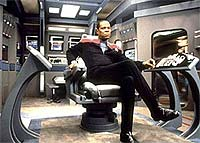
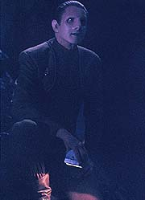
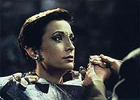
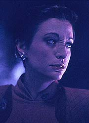
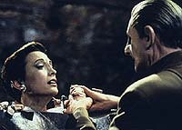

MANCHETE
DO EPISDIO
Enredo
com Nog e Sisko se d melhor
que trama criada para Kira e Odo
Episdio
anterior | Prximo
episdio
Sinopse:
Data Estelar: 48521.5.
Odo e Kira em um explorador, de
volta de uma misso na fronteira Cardassiana, perseguem uma nave
Maquis com um tripulante at a lua de um planeta gigante gasoso.
Eles descobrem os destroos da outra nave e procuram o Maqui em
um sistema de cavernas prximo --a superfcie da lua desfavorvel
vida. Existe tambm uma forte interferncia inica que
impede o funcionamento dos sensores, tricorders, transportes e
comunicaes de longa distncia. Os dois se separam e Kira
acaba ficando com o p preso em uma estrutura cristalina que
imune aos feisers manuais. O pior que tal estrutura est se
expandindo e ameaa encapsular completamente o corpo de Kira e
mat-la em pouco tempo.

Em
DS9, Nog completa a maioridade e (como todo bom Ferengi) oferece
um suborno a Sisko para que ele escreva uma carta de recomendao
para que ele possa tentar a admisso na Academia da Frota
Estelar. Sisko, surpreso e curioso pelo desejo de Nog, lhe confere
a tarefa de fazer o inventrio de uma rea de carga. Nog faz um
timo trabalho e em tempo recorde, mas Sisko ainda tem dvidas.
Nas cavernas, temos sucessivos desmoronamentos enquanto o
crescimento do cristal comea a dificultar a respirao de
Kira. Kira sugere que Odo v embora, mas o comissrio quer
ficar. Ele vem com a idia de um gerador ultra-snico para
tentar estilhaar o cristal. Enquanto o gerador tenta encontrar a
freqncia de ressonncia correta, Odo conta de suas aventuras
com O'Brien, a bordo de um caiaque, na holo-sute. Conta tambm
da origem de seu nome. Quando ele era apenas um monte de goma no
laboratrio do doutor Mora, ele ocupava um recipiente com o rtulo
de Odo'Ital (que quer dizer "nada" em Cardassiano). Ele
brincou por um tempo como se essa designao fosse um nome
Bajoriano, Odo Ital e finalmente ficou s com Odo.
Novos tremores acontecem, o desabamento da caverna parece iminente
e o gerador no produz o efeito desejado. Kira ordena que Odo v
embora. Odo fica e diz que no ir partir de forma alguma porque
a ama. Para espanto do comissrio a major diz que o sentimento
recproco.
Sisko diz a Nog que decidiu negar o seu pedido. Nog diz que seu
desejo no simplesmente um impulso ou algum truque. Ele no
quer acabar como seu pai, servindo mesas no "Quark's",
apesar de Rom ter talento para ser um excelente engenheiro. O
jovem Ferengi quer que a sua vida tenha sentido e acha que pode se
realizar como oficial da Frota Estelar e ter as chances que seu
pai nunca teve. Sisko fica tocado com os motivos de Nog e decide
escrever a carta.

Com
a surpreendente "revelao" de Kira, Odo comea a
suspeitar de todo o cenrio, desde a perseguio ao Maqui at
a morte iminente de Kira. Odo diz que a verdadeira major no o
ama e no mentiria para ele sobre isso. Ele aponta o feiser para
a major e pergunta quem ela na verdade. Ento o cristal e a
"major" se transformam na Fundadora. Ela tambm era o
"maquis" que eles perseguiram. A Fundadora diz que
suspeitava dos sentimentos de Odo por Kira e de que estes seriam o
motivo para ele ficar entre os "slidos". Ela planejou
tudo para que Kira fosse dada como morta e Odo se sentisse
inclinado a voltar ao "Grande Elo".
Odo se recusa e obriga a Fundadora a dizer onde que a verdadeira
Kira est. Ela assim o faz e se transporta dali. Odo resgata Kira
e de volta estao conta por alto do plano da Fundadora, mas
sem contar dos seus sentimentos pela major, que permanecem s
para o comissrio.
Comentrios:
Tivemos uma melhora em relao semana passada, mas ainda
ficamos com um episdio medocre, na melhor das hipteses. A
histria principal do episdio (de Odo e "Kira" na
caverna) arrastada e visualmente pouco interessante. E ainda
que se beneficie de uma inesperada reviravolta no final, no
consegue afastar a sensao de parecer um exerccio em redundncia.
Sua trama secundria (de Nog querendo entrar na Frota Estelar),
apesar de uma certa ingenuidade, ganha em tela uma vida que no
tinha no papel. Saibam mais detalhes, sem precisar ser encapsulado
vivo por uma rocha no processo, nas linhas abaixo.
O episdio traz, em sua histria principal, uma "grande
surpresa"(TM) na revelao de que era a Fundadora que
estava se passando por Kira e "presa na rocha" o tempo
todo. Cabe examinar o episdio uma segunda vez e verificar se tal
histria faz sentido com o final conhecido e se pistas foram
deixadas para que tal concluso pudesse ser antecipada.

A
principal dvida fica no fato da Fundadora conseguir imitar to
bem Kira. Se levarmos em conta que Kira nem teve o seu perfil
psicogrfico estabelecido pelos Fundadores em "The
Search", tal habilidade da Fundadora aqui
espantosa e isto se v ao longo da srie com outros Fundadores
tambm (este um dos motivos que torna o Dominion um adversrio
to forte). Fica o debate sobre a abertura ou no "de mais
uma caixa de vermes aqui"(TM), mas no chega a ser uma falha
do episdio em si, caindo na categoria do "fato novo
estabelecido".
A outra grande dvida por que Odo no conseguiu identificar a
Fundadora como tal (ela chega at a mudar de forma na frente
dele, se expandindo). Aparentemente faltava experincia do comissrio
com os da sua raa, mas ao longo da srie ele consegue
"perceber" (com uma espcie de intuio), ainda que no
em todos os casos, outros Fundadores em sua forma no mais
obviamente identificvel.
Desde o comeo, pelo fato de todos os equipamentos que poderiam
ser utilizados para uma fuga no funcionarem, tnhamos a impresso
de que a situao havia sido planejada por algum. Com o
transporte da Fundadora ao final, ficou claro que nenhum dos dois
transmorfos correu qualquer perigo o tempo todo. Outras dicas: a
atuao meio diferenciada (ou ruim mesmo) de Nana Visitor, o
fato de o cristal "mutar" enquanto o gerador tentava
encontrar a freqncia de ressonncia, Kira tentando usar a sua
patente para fazer Odo ir embora etc.
(As cenas em que a "falsa Kira" fica sozinha no
funcionam muito bem em uma segunda assistida. Ela parece que est
realmente preocupada com a situao.)
O fato de os Fundadores terem meios para armar tal situao no
se discute. O fato de o "Grande Elo" ter tanto trabalho
para trazer Odo "de volta ao rebanho" est relacionado
diretamente ao fato de os Fundadores verem a si prprios como
deuses. volta de Odo tem um peso e um significado especiais
para os do seu povo (imaginem um deus do Olimpo ou de Asgard,
vivendo por vontade prpria entre os mortais por ser contrrio a
tudo que os seus irmos representam --esta a situao aqui).
Os Fundadores passam a srie toda tentando trazer Odo de volta ao
"Grande Elo". Eles o manipulam sim, mas nunca o foram.
Sempre foi dele a deciso em cada uma das situaes que
surgiram. de se presumir que a Fundadora tenha descoberto os
sentimentos de Odo por Kira durante o seu "elo" com o
comissrio. Aqui ela fez um teste prtico, colocando Odo em uma
situao absolutamente extrema. Ela precisava disso para ter
certeza (seno resolver o seu "problema" de uma vez).
(Entretanto, cabe ressaltar que os detalhes do que acontece
durante o "elo", especialmente quanto partilha de
informao, nunca foram absolutamente estabelecidos durante a srie.
Tivemos algumas variaes de comportamento. Mais sobre isso na
poca adequada.)

Ento
Odo ama Kira e ele sabe que a major no o ama. A major no ama
Odo e no sabe que ele a ama. At a o episdio no trouxe
nada de novo para a mesa. O real motivo para Odo no se juntar ao
"Grande Elo" o seu amor por Kira, algo que vai
acompanh-lo at o final da srie. verdade que (em "The
Search, Part II"), antes de sua raa se revelar como
a dos Fundadores do Dominion, Odo estava inclinado a ficar com
eles (com ou sem Kira), mas cabe lembrar do imenso poder que o
"elo" tem sobre Odo. Ele vai quase sucumbir uma vez no
curso da srie (durante o arco de seis episdios que abre a
sexta temporada de DS9) e s vai conseguir enfrentar a Fundadora
de igual para igual no ltimo episdio da srie.
Olhando em retrospectiva, o fato de Odo ser da raa dos
Fundadores do Dominion tem sido usado de forma medocre at aqui
("The
Search, Part II", "The
Abandoned" e "Heart of Stone"). Isso
vai mudar em breve com o legendrio duplo "Improbable
Cause"/"The Die is Cast" e com o
excelente "The Adversary", que encerra est
terceira temporada.
Quanto histria secundria no temos nenhum problema grave
de trama, apesar de termos que levar em conta as caracterizaes
tanto de Rom quando de Nog at aqui na srie e ver como elas so
compatveis ou no com os eventos desta semana.
Rom foi, por vrias vezes, chamado de idiota no passado, apesar
de ter mostrado aptido tecnolgica (em "Necessary
Evil", por exemplo). um pouco difcil aceitar Rom
como um "gnio da mecnica" (mas no impossvel) e
isso foi mantido de forma to consistente no resto da srie que
francamente perdovel (definitivamente no foi o caso
"de um filho falando do prprio pai", pois tal coisa
foi explicitada como uma verdade de fato ao longo da srie).
Outro ponto de dvida quanto capacidade (no o desejo) de
Nog entrar na Academia. Na primeira temporada de DS9 ele
ainda estava brigando com a leitura do ingls e aqui o prprio
Sisko menciona suas notas pouco alentadoras na escola (sem falar
na bvia ignorncia dele, em conceitos aparentemente elementares
do funcionamento de um explorador, em "The
Jem'Hadar", e isso sem contar seu passado de delinqente).
Se considerarmos que mesmo o superdotado Wesley Crusher falhou em
sua primeira tentativa para ingressar na Academia, fica um pouco
difcil aceitar que Nog venha a conseguir tal feito. Aqui que
entra uma "suspenso de descrena"(TM) que normalmente
os fs de Jornada esto dispostos a fazer. E se levarmos
em conta o benefcio que isto trouxe ao personagem Nog, isso nem
passa perto de ser um problema.
O curioso que Nog em nenhum momento mostra estar querendo abraar
os valores da Federao (da no entrando em choque com as
suas atitudes em "Life
Support", da semana passada), tanto que ele inicia a
transao no modo Ferengi, tentando "comprar" Sisko.
Ele v Sisko como um caminho para fazer algo com sua vida, obter
respeito dos outros, algo que ele acha que o seu pai no possui.
A dinmica familiar ainda mais curiosa. Sisko acabou se
tornando mentor do melhor amigo do seu filho, uma amizade qual
ele era contrrio em primeiro lugar. Nog acabou tomando, com a
ajuda do comandante, o caminho que Sisko imaginava para Jake, que
no o seguiu profissionalmente. O mais curioso que Sisko usou
uma priso de Nog para "convencer" Quark a ficar em DS9
em primeiro lugar (em "Emissary").
Da mesma forma que Rom apoiou a ida de Nog para a Academia, a
atitude de seu filho o inspirou a dar uma reviravolta na prpria
vida e passar a trabalhar na estao (na equipe de O'Brien), em "Bar
Association", da prxima temporada, deixando seu servio
no Quark's (mais tarde Rom acaba se casando e vira o sucessor de
Zek como Grande Nagus Ferengi).
Singer teve uma direo bastante interessante na estao,
apesar de ter sido muito prejudicado pelos cenrios das cavernas,
especialmente por aquela bendita "rocha". A melhor cena
do episdio aquela em que Bashir e Sisko falam sobre o alferes
Vilix'pran em uma tomada nica ao longo do segundo piso do
Promenade. Logo em seguida Nog interrompe Sisko sozinho na mesma
caminhada, mas j em outra tomada.

Brooks
foi timo no geral e absolutamente fenomenal na cena-chave entre
Sisko e Nog. Faltou pouco ele sacudir Eisenberg para "fazer a
verdade sair do Ferengi", mas o genuno interesse do seu
personagem em ajudar Nog literalmente saltou da tela e tocou a
audincia. Bravo! Auberjonois fica com o destaque especialmente
por dois momentos-chave, quando Odo diz "falsa Kira"
que a ama e quando o seu personagem, ouvindo o "eu te amo
tambm" da "falsa Kira", racionaliza que ela
uma impostora. Visitor que no esteve to bem, parecendo
desconfortvel (e devia estar mesmo). Curioso que em "Second
Skin" ela usou o seu desconforto em prol do episdio,
o que no foi o caso desta semana (apesar da sua expresso
facial, pouco antes da transformao da Fundadora, ter sido
apropriada). Os demais regulares estiveram todos bem.
Eisenberg teve o seu maior papel e tambm a sua melhor atuao
em DS9 at aqui, ficando com o destaque da semana. Grodnchik,
bastante contido, tambm foi bem. Jens foi perfeita como sempre.
Foram citados tanto os Maquis quanto o novo tratado de paz entre
Cardssia e Bajor, que, apesar da loucura da sua criao em "Life
Support", no ser esquecido no curso da srie.
Foi interessante usar Dax, a "defensora nmero um dos
Ferengis", como a voz da descrena quanto admisso de
Nog na Academia.
Odo e O'Brien andando de caiaque foi uma idia muito interessante
e O'Brien cantando "Louie, Louie", um verdadeiro clssico.
A origem do nome de Odo (Odo'Ital, Odo Ital, Odo) tambm foi um
doce s.
Que rdio a Fundadora (enquanto "falsa Kira") usou para
contatar Odo? Por que Odo, ao invs de usar uma rocha (que sempre
parece estpido em tela), no utilizou as suas habilidades para
tentar libertar Kira? Desde quando a fronteira Cardassiana fica to
longe de DS9? Curioso que nem Odo e nem a Fundadora tiveram que se
regenerar durante o curso do episdio.
Aparentemente a Fundadora colocou o feiser em baixa intensidade e
simulou um "aumento de volume do cristal se alimentando da
energia da arma". Observem que Odo no usa o feiser no
"cristal". Auberjonois no representou como se de fato
Odo fosse atirar na Fundadora. Como o leitor j deve ter
percebido, o dito que "nenhum transmorfo jamais feriu um
outro" vai ter um "payoff" muito em breve na srie.
O fato de Odo conseguir montar o gerador um pouco atpico para
o personagem, mas no totalmente absurdo (alm do qu, o
gerador no teve o efeito procurado e pareceu ser uma coisa
relativamente simples, baseada em real cincia e no em
"tecnobaboseira").
"Heart of Stone" mais uma fraca hora de DS9.
A histria de Odo no traz rigorosamente nada de novo para mesa
em termos de seus personagens e evita qualquer comprometimento ao
seu final. A histria de Nog, apesar de certas implausibilidades,
definitivamente contagiante e praticamente carrega sozinha a
recomendao do segmento.
Citaes
Quark - "Everything
that goes wrong around here is your fault; it's in your
contract."
("Tudo que sai errado aqui sua culpa; est no seu
contrato.")
Odo - "If it helps any, he's the one who does all the
singing."
("Se servir de consolo, ele o que faz toda a
cantoria.")
Odo - "After all, we've been in worse situations than this
one and come out all right."
("Afinal, j estivemos em situaes piores que essa e samos
muito bem.")
Kira - "Name three."
("Liste trs.")
Fundadora - "No changeling has ever harmed another."
("Nenhum transmorfo j feriu outro antes.")
Odo - "There's always a first time."
("Sempre h uma primeira vez.")
Trivia:
 Em "Heart of Stone", a histria envolvendo Odo e
Kira claramente era a histria primria do episdio (com referncia
no ttulo inclusive), mas a histria secundria envolvendo Nog
querendo entrar na Academia da Frota ganhou muito mais aprovao
por parte da audincia. Ira Behr admite que isso aconteceu, a
histria secundria se tornou a mais interessante durante a
produo do episdio. Todos atuaram muito bem na histria
secundria e "tambm no tiveram aquela maldita 'rocha'
para atrapalhar", diz o mentor da srie.
Em "Heart of Stone", a histria envolvendo Odo e
Kira claramente era a histria primria do episdio (com referncia
no ttulo inclusive), mas a histria secundria envolvendo Nog
querendo entrar na Academia da Frota ganhou muito mais aprovao
por parte da audincia. Ira Behr admite que isso aconteceu, a
histria secundria se tornou a mais interessante durante a
produo do episdio. Todos atuaram muito bem na histria
secundria e "tambm no tiveram aquela maldita 'rocha'
para atrapalhar", diz o mentor da srie.
A claustrofbica Nana Visitor absolutamente odiou a idia da
rocha. Primeiro o seu p foi literalmente rebitado no cho e
depois ela foi progressivamente sendo "vestida" com um
"apertado modelo exclusivo" cristalino. A produo
pelo menos teve o bom senso de colocar uma espcie de assento
dentro da estrutura para que a atriz pudesse relaxar um pouco
entre as tomadas.
Visitor detestou tambm o produto final, pois ficou aparente o
seu corpo transformando-se em rocha e no sendo envolvido por
uma, que era o efeito desejado. O diretor Alexander Singer
batalhou para tentar fazer a rocha visualmente mais interessante,
mesmo em ps-produo, mas ele reconhece o fracasso.
A atriz Salome Jens gentilmente permitiu que os seus crditos
fossem colocados apenas ao final do episdio para manter o
suspense at o fim. O roteirista Ren Echevarrria disse, na poca,
que o modo como Odo descobriu que a "falsa Kira" no
era a verdadeira, racionalizando a partir do fato de ela dizer que
o amava, deve ter sido extremamente doloroso para o personagem.
Na primeira lida do roteiro, Aron Eisenberg (o ator de Nog) ficou
com muito medo de estar sendo sacado da srie. S quando Rick
Berman veio falar com ele pessoalmente que o seu medo passou.
Quando leu de novo o texto que percebeu o tamanho do presente
que estava ganhando. Seu personagem foi recebendo cada vez mais e
mais desenvolvimento ao longo das temporadas (ganhando bem mais
importncia do que Jake ao final da srie inclusive). Na quarta
temporada ele vai para a Academia, na quinta ele inicia um
programa de treinamento em DS9 e nas duas ltimas ele participa
ativamente (j como alferes da Frota Estelar) da Guerra com o
Dominion, em campo e pilotando a Defiant em vrias batalhas. O
personagem um dos que mais sofre com os horrores da Guerra,
como pode ser visto em "The Siege of AR558" e "It's
Only a Paper Moon", ambos da stima temporada. A ltima
cena na srie, uma das ltimas de "What You Leave
Behind", do tenente Nog, que se refere diretamente ao
episdio desta semana, extremamente tocante. Nog permanece
como o maior exemplo de desenvolvimento de personagens em DS9,
basta colocar a primeira (de "Emissary")
e a ltima cena dele na srie lado a lado. Outro momento
inesquecvel do personagem se d quando ele (como capito)
comanda a Defiant no futuro alternativo do clssico absoluto "The
Visitor", da quarta temporada.
No episdio descobrimos que O'Brien continua gostando de praticar
canoismo (hbito dos tempos da Enterprise de Picard) no holodeck
e agora com a companhia de Odo, e que o comissrio continua
gostando dos livros policiais do chefe. Robert Wolfe queria
inclusive que Ren Auberjonois cantasse "Louie, Louie",
mas a produo no conseguiu os direitos da cano, que Odo
diz que o Miles adora cantar enquanto est remando.
Wolfe e Behr tambm citaram pela primeira vez o alferes
Vilix'pran na srie. Bashir e Sisko comentam sobre o ch de beb
do alferes que vai dar a luz. S que alm de ser macho ele se
reproduz "desabrochando". Seus filhos nascem e passam o
incio de suas vidas em um pequeno reservatrio d'gua que
O'Brien est construindo. Ele tinha asas na cabea dos
produtores, mas tal coisa no chegou na verso final do roteiro.
Ele, por motivos bvios, no aparece em cena na srie, mas
citado novamente em "Apocalypse Rising" e "Business
as Usual", ambos da quinta temporada.
Ficha
tcnica:
Escrito por Ira Steven Behr
& Robert Hewitt Wolfe
Direo de Alexander Singer
Exibido em 06/02/1995
Produo: 060
Elenco:
Avery Brooks como
Benjamin Lafayette Sisko
Ren Auberjonois como Odo
Nana Visitor como Kira Nerys
Colm Meaney como Miles Edward O'Brien
Siddig El Fadil como Julian Subatoi Bashir
Armin Shimerman como Quark
Terry Farrell como Jadzia Dax
Cirroc Lofton como Jake Sisko
Elenco convidado:
Max Grodnchik
como Rom
Aron Eisenberg como Nog
Salome Jens a Fundadora
Majel Barrett-Roddenberry como a voz do computador